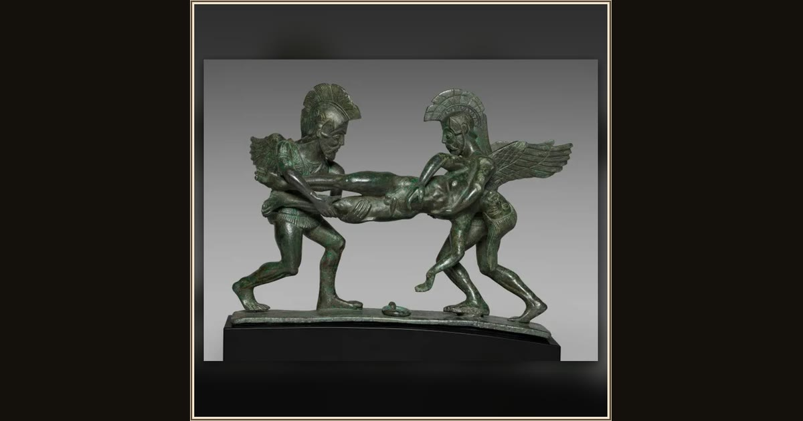

Sleep and Death Cista Handle
Etruscan · 400–375 BCE · cma
Two winged figures, identified by the museum as Sleep and Death, carry a body. Apollo says Alcestis is dying and sees Death approaching the house (20–24). Explore its place in Euripides's Plays, Alcestis, line 20.